# install.packages("dplyr") # you only need to install it once
# install.packages("tidyr") # you only need to install it onceWeek 5 - Hands-On Examples
week05
exercise
The R script is available here: link
Goals
- Install new R packages
- Create basic plots with ggplot2
Install New Packages
We will use a couple of additional R packages for this training in session 9, for example:
- {tidyr}: provides functions that help you get to tidy data
- {dplyr}: provides functions that help you to manipulate data
- Install the {
dplyr} and {tidyr} packages.
Check if you can find
{dplyr}and{tidyr}in the “Packages” panel in RStudio.Please use the following code to create a data frame of all installed packages in your system. Show a couple of first lines of the data frame.
my_pkgs <- as.data.frame(installed.packages()[, c(1, 3:4)])
head(my_pkgs) Package Version Priority
askpass askpass 1.2.1 <NA>
backports backports 1.5.0 <NA>
base64enc base64enc 0.1-3 <NA>
bit bit 4.6.0 <NA>
bit64 bit64 4.6.0-1 <NA>
blob blob 1.2.4 <NA>- According to
my_pkgs, how many packages are installed in your system?
nrow(my_pkgs) # the number can be different[1] 130- Extract the rows for the “ggplot2”, “tidyr”, “dplyr” packages from
my_pkgs.
# extract by rownames
my_pkgs[c("ggplot2", "tidyr", "dplyr"), ] Package Version Priority
ggplot2 ggplot2 3.5.2 <NA>
tidyr tidyr 1.3.1 <NA>
dplyr dplyr 1.1.4 <NA>## or
# extract by filtering the names in the "Package" column
my_pkgs[my_pkgs$Package %in% c("ggplot2", "tidyr", "dplyr"), ] Package Version Priority
dplyr dplyr 1.1.4 <NA>
ggplot2 ggplot2 3.5.2 <NA>
tidyr tidyr 1.3.1 <NA>Create a Basic Histogram
In the hands-on examples of session 1 and 2, we have drawn histograms with the basic R function hist().
Now let’s try with functions from {ggplot2} package.
- Import the
read-counts.csvfile into RStudio and name the data ascounts.
library(readr)
counts <- read_csv("../exos_data/read-counts.csv") # replace the path by the yoursRows: 45 Columns: 41
── Column specification ────────────────────────────────────────────────────────
Delimiter: ","
chr (1): Feature
dbl (40): WT.1, WT.2, WT.3, WT.4, WT.5, WT.6, WT.7, WT.8, WT.9, WT.10, SET1....
ℹ Use `spec()` to retrieve the full column specification for this data.
ℹ Specify the column types or set `show_col_types = FALSE` to quiet this message.dim(counts)[1] 45 41- Load the {
ggplot2} package. Then create a histogram with the functiongeom_histogram()for all genes of the sample “WT.2”. Have you noticed the message fromgeom_histogram()about the bins?
library(ggplot2)
ggplot(data = counts, aes(x = WT.2)) +
geom_histogram()`stat_bin()` using `bins = 30`. Pick better value with `binwidth`.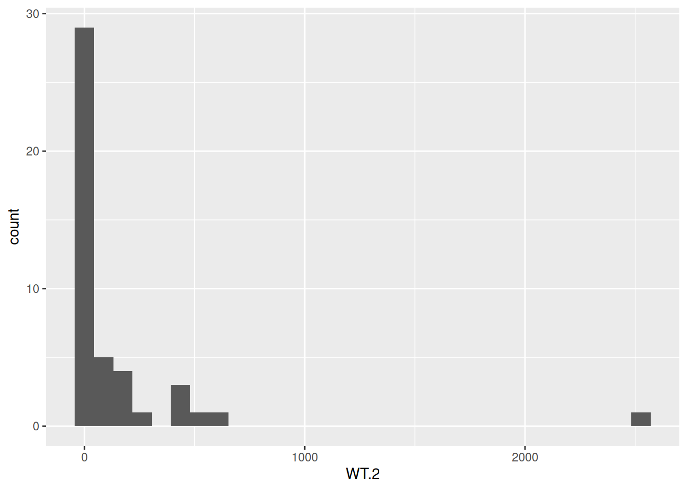
- Create a new histogram for the sample “WT.2”, but this time use the log2 of the gene counts. Do you see the messages from
geom_histogram()?
ggplot(data = counts, aes(x = log2(WT.2))) +
geom_histogram()`stat_bin()` using `bins = 30`. Pick better value with `binwidth`.Warning: Removed 5 rows containing non-finite outside the scale range
(`stat_bin()`).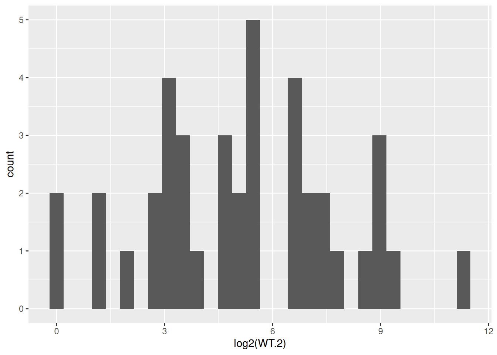
- Try 10 and 20 for the
binsparameter ofgeom_histogram(). Observe how the histogram changes.
ggplot(data = counts, aes(x = log2(WT.2))) +
geom_histogram(bins = 10) +
labs(title = "10 bins")Warning: Removed 5 rows containing non-finite outside the scale range
(`stat_bin()`).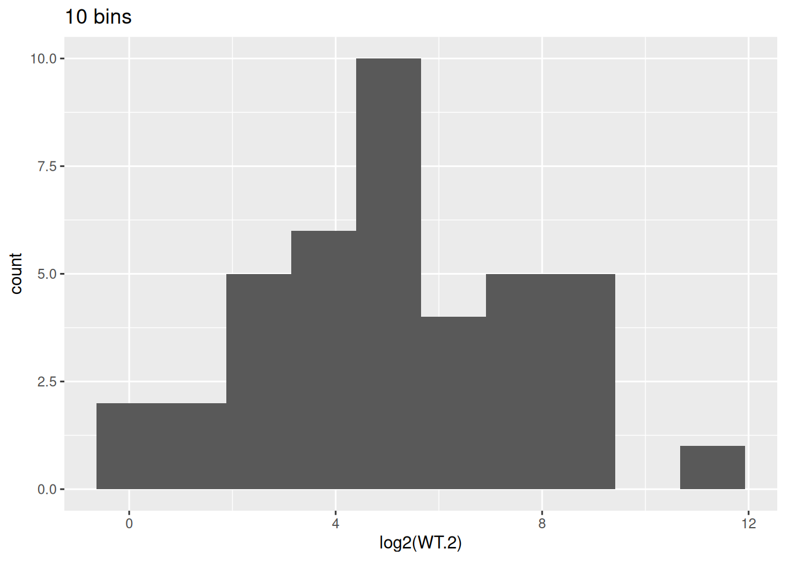
ggplot(data = counts, aes(x = log2(WT.2))) +
geom_histogram(bins = 20) +
labs(title = "20 bins")Warning: Removed 5 rows containing non-finite outside the scale range
(`stat_bin()`).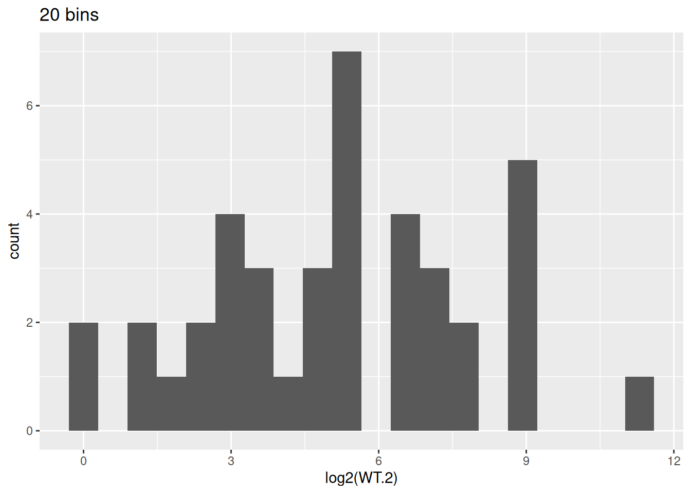
- We will use 10 bins for the histogram. Change the color of the bars to blue.
ggplot(data = counts, aes(x = log2(WT.2))) +
geom_histogram(bins = 10, color = "blue")Warning: Removed 5 rows containing non-finite outside the scale range
(`stat_bin()`).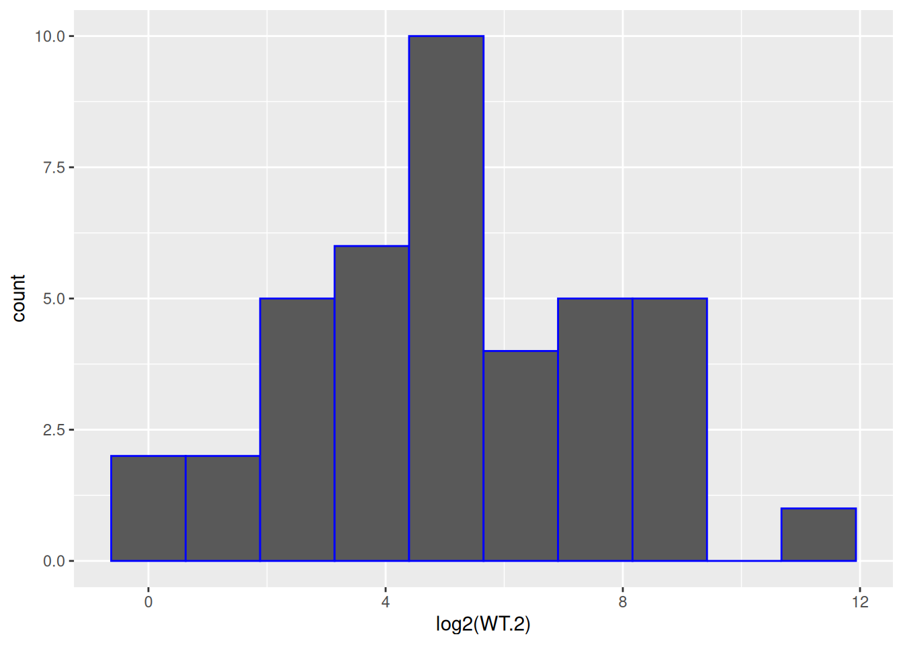
- Based on the previous figure, fill the bars in orange.
ggplot(data = counts, aes(x = log2(WT.2))) +
geom_histogram(bins = 10, color = "blue", fill = "orange")Warning: Removed 5 rows containing non-finite outside the scale range
(`stat_bin()`).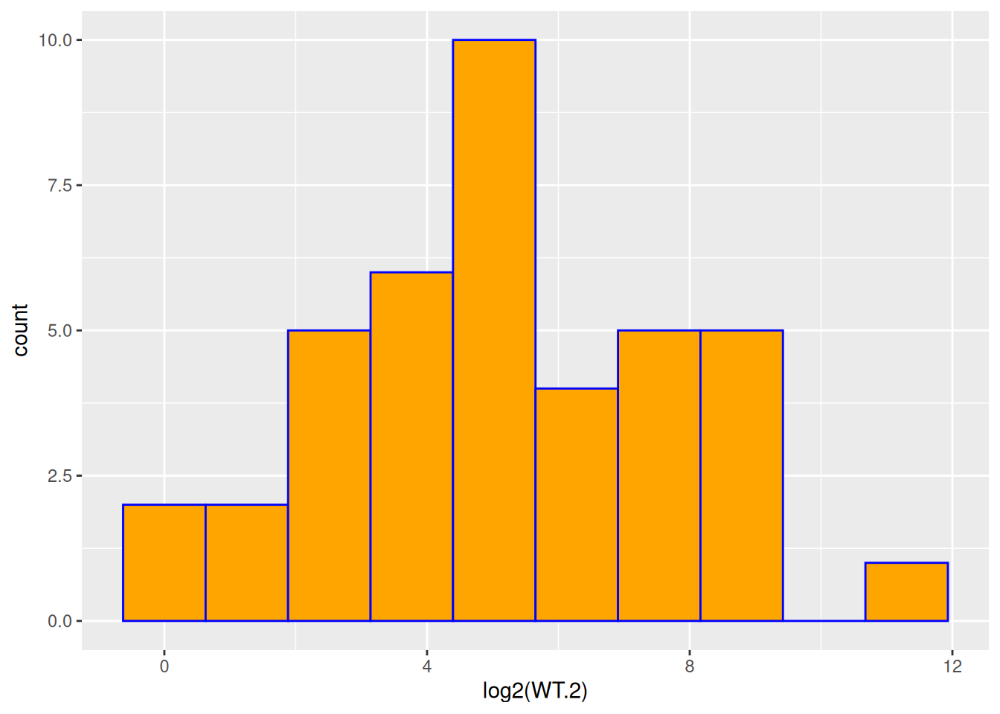
- Based on the previous figure, change:
- x-axis title to be: “log2 gene expression”
- y-axis title to be: “Counts”
- plot title to show sample name and the number of genes used.
ggplot(data = counts, aes(x = log2(WT.2))) +
geom_histogram(bins = 10, color = "blue", fill = "orange") +
labs(
x = "log2 gene expression",
y = "Counts",
title = paste0(nrow(counts), " genes of WT.2 sample")
)Warning: Removed 5 rows containing non-finite outside the scale range
(`stat_bin()`).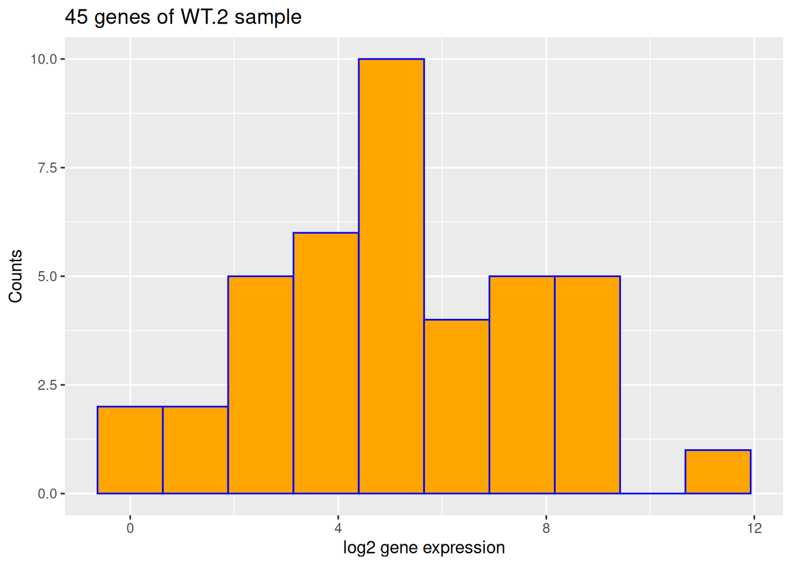
- Based on the previous figure, use the theme
theme_bw().
ggplot(data = counts, aes(x = log2(WT.2))) +
geom_histogram(bins = 10, color = "blue", fill = "orange") +
labs(
x = "log2 gene expression",
y = "Counts",
title = paste0(nrow(counts), " genes of WT.2 sample")
) +
theme_bw()Warning: Removed 5 rows containing non-finite outside the scale range
(`stat_bin()`).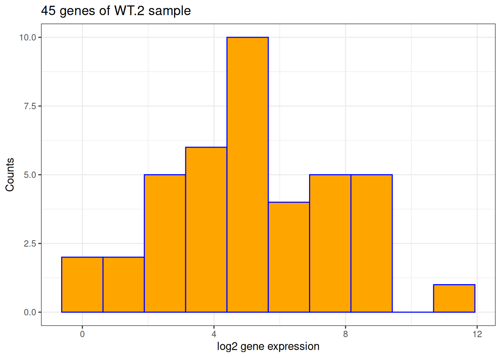
Create a Boxplot with ggplot
In the hands-on examples of session 3, we demonstrated that there is a significant difference in the expression of LOH1 between WT and SET1 samples.
This gene is upregulated in SET1 samples compared to WT samples, the log2 fold change is 2.85.
Now, let’s draw a more sophisticated boxplot with ggplot2.
- Prepare a data frame for the boxplot. We need:
- a column for the expression levels of different samples
- a column to indicate what is the sample group (WT or SET1)
gg_df <- data.frame(
expr_value = c(
unlist(counts[counts$Feature == "LOH1", paste0("WT.", 1:10)]),
unlist(counts[counts$Feature == "LOH1", paste0("SET1.", 1:10)])
),
gp = rep(c("WT", "SET1"), each = 10)
)
gg_df expr_value gp
WT.1 10 WT
WT.2 2 WT
WT.3 14 WT
WT.4 19 WT
WT.5 35 WT
WT.6 17 WT
WT.7 6 WT
WT.8 3 WT
WT.9 31 WT
WT.10 13 WT
SET1.1 67 SET1
SET1.2 49 SET1
SET1.3 83 SET1
SET1.4 185 SET1
SET1.5 203 SET1
SET1.6 83 SET1
SET1.7 40 SET1
SET1.8 84 SET1
SET1.9 134 SET1
SET1.10 155 SET1- Create a boxplot for the expression level by sample group.
p_base <- ggplot(gg_df, aes(x = gp, y = expr_value)) +
geom_boxplot()
p_base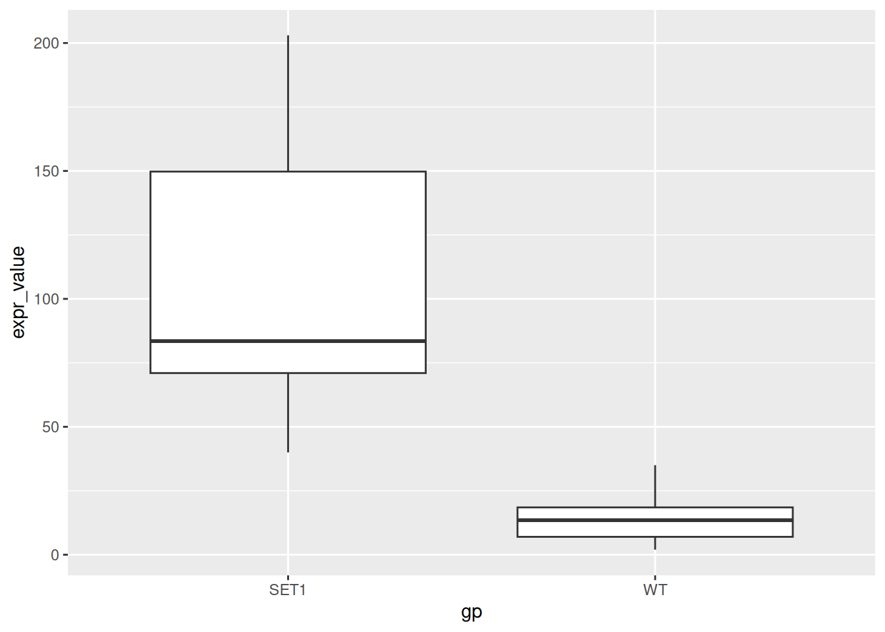
- Modify labels:
- Remove x-axis title
- Change y-axis title to “Expression Level”
- Add a plot title “Expression of LOH1 in SET1 and WT samples”
- Add a subtitle “log2FoldChange = 2.85”
p_base <- p_base + labs(
x = NULL,
y = "Expression Level",
title = "Expression of LOH1 in SET1 and WT samples",
subtitle = "log2FoldChange = 2.85"
)
p_base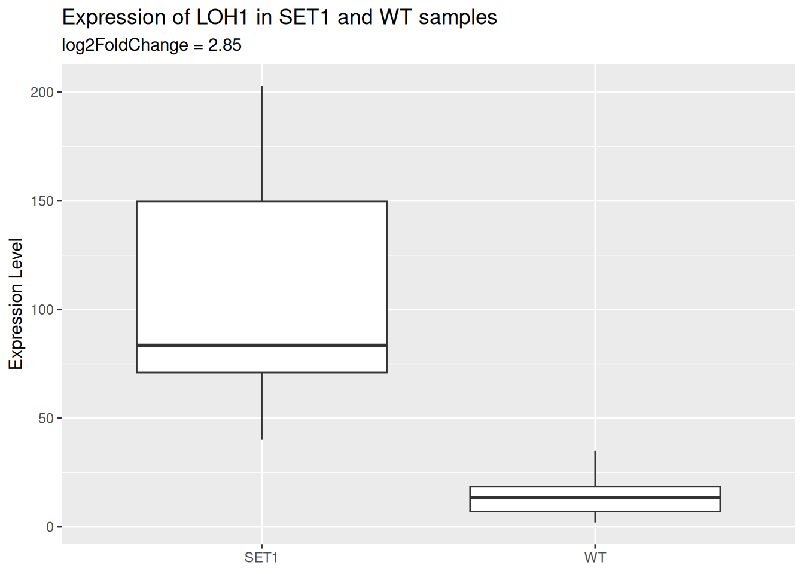
- Add a layer of scatter plot over the boxplot.
- Color the points by sample group.
- Use the
alphaparameter to let points be semi-transparent.
p_base <- p_base +
geom_point(
aes(color = gp),
alpha = 0.5
)
p_base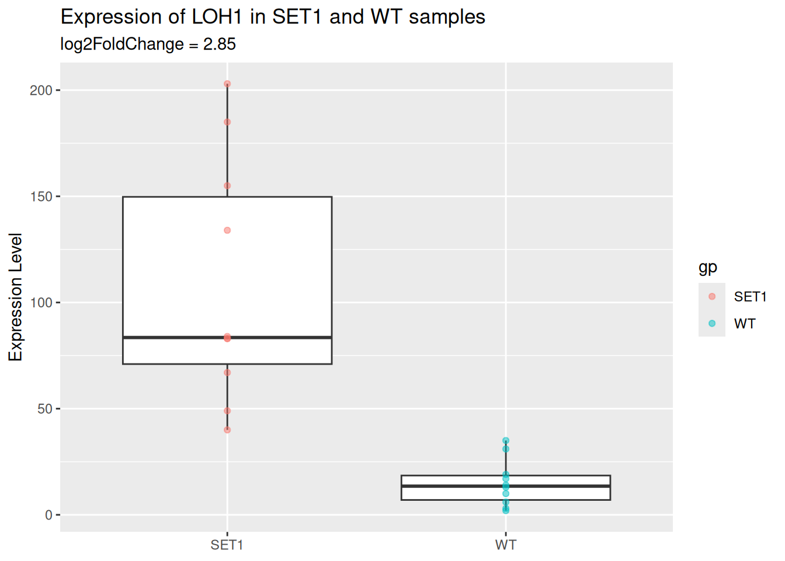
- Change the theme to
theme_minimal().
p_base <- p_base + theme_minimal()
p_base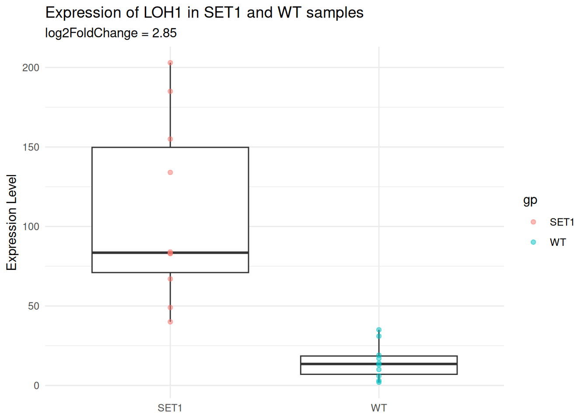
- With the
theme()function:
- Move the plot title to the center.
- Hide the legend.
p_base <- p_base + theme(
plot.title = element_text(hjust = 0.5), # center plot title
legend.position = "none"
)
p_base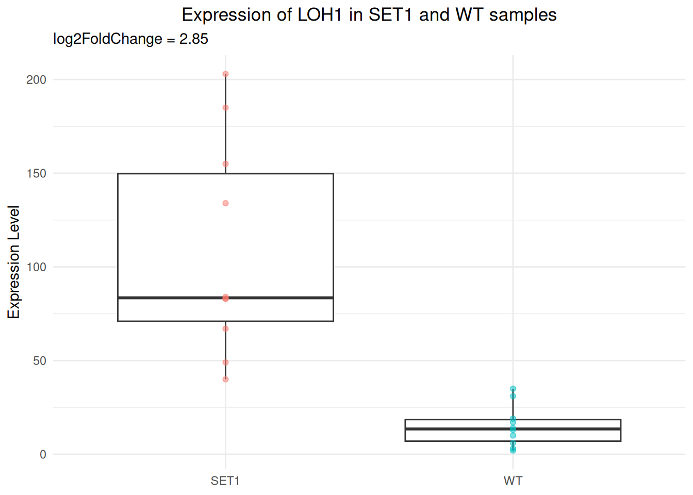